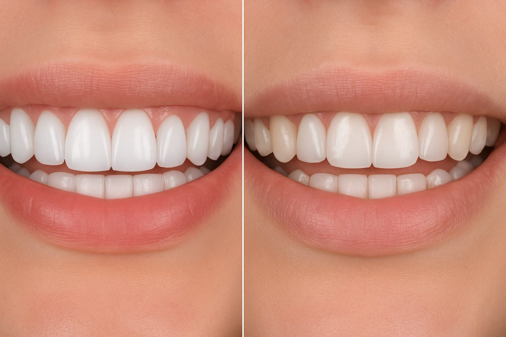

لمینت دندان یک روش زیبایی برای اصلاح رنگ، فرم و فاصله بین دندانها است که با استفاده از پوستههای نازک سرامیکی انجام میشود.
رعایت بهداشت دهان، پرهیز از غذاهای خیلی سفت و مراجعه دورهای به دندانپزشک ضروری است.